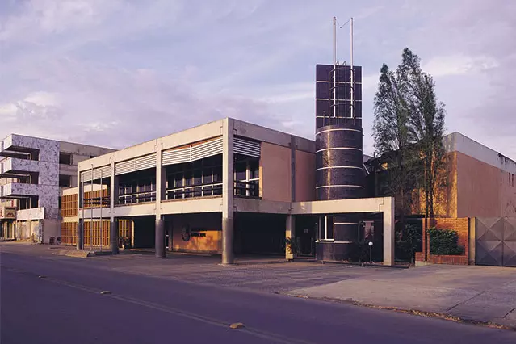

Novo recorde em Minas inclui correção em Vespasiano, com mais 2.576 pacientes

O número de novos casos de Covid-19 em Minas Gerais bateu novo recorde nesta quinta-feira (25), com a confirmação nas últimas 24h de mais 13.925 pacientes diagnosticados com a doença. Parte considerável deste número, porém, se deve à correção de um enorme atraso nas atualizações por parte da Prefeitura de Vespasiano, na região metropolitana de Belo Horizonte.
Jovem é morto em possível acerto de contas do tráfico de drogas em Vespasiano
Um jovem de 20 anos foi morto com cinco tiros em um possível acerto do tráfico de drogas em Vespasiano, na região metropolitana de Belo Horizonte. O crime aconteceu na madrugada deste domingo, no bairro Gávea.
Homem é preso suspeito de roubar gado em fazenda de Vespasiano, na Grande BH
A polícia prendeu um homem suspeito de furtar vacas e bezerros de uma fazenda em Vespasiano, na Região Metropolitana de Belo Horizonte. O crime foi na noite desta quarta-feira (27).
Por Guilherme Pimenta, G1 Minas — Belo Horizonte
28/01/2021 05h49 Atualizado há 2 meses.
Prefeitura de Vespasiano autoriza volta do Atlético aos treinos na Cidade do Galo
A Prefeitura de Vespasiano autorizou o retorno do Atlético aos treinamentos na Cidade do Galo. Entretanto, o clube ainda não confirmou o seu retorno às atividades.
A prefeita Ilce Rocha (PSDB) confirmou a permissão em entrevista à Rádio Itatiaia. Segundo ela, o clube enviou à administração municipal um pedido para a retomada dos treinos na Cidade do Galo e, ainda apresentou medidas de segurança para evitar a transmissão do novo coronavírus.